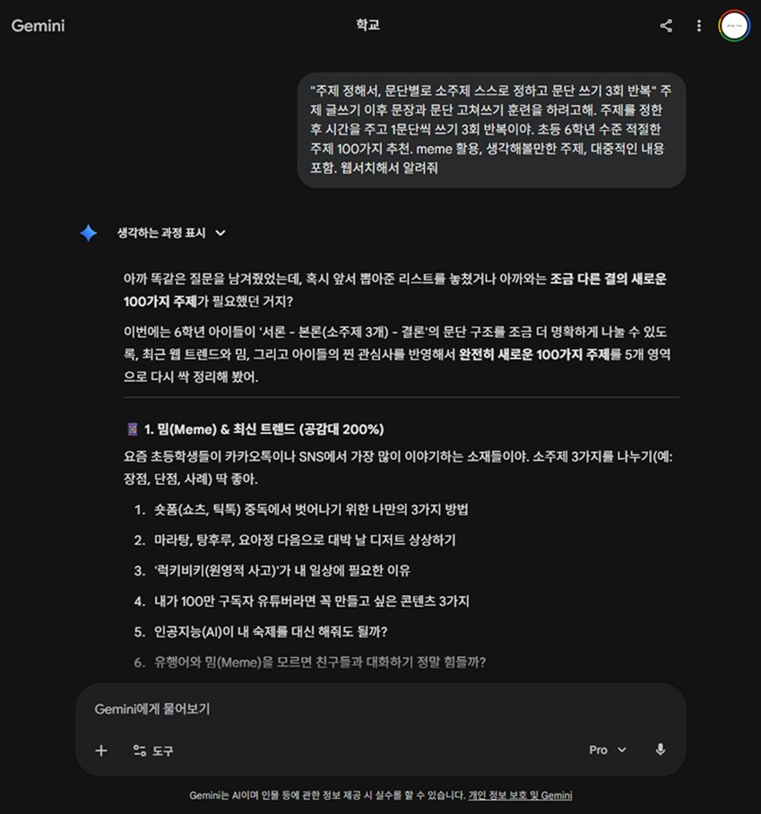
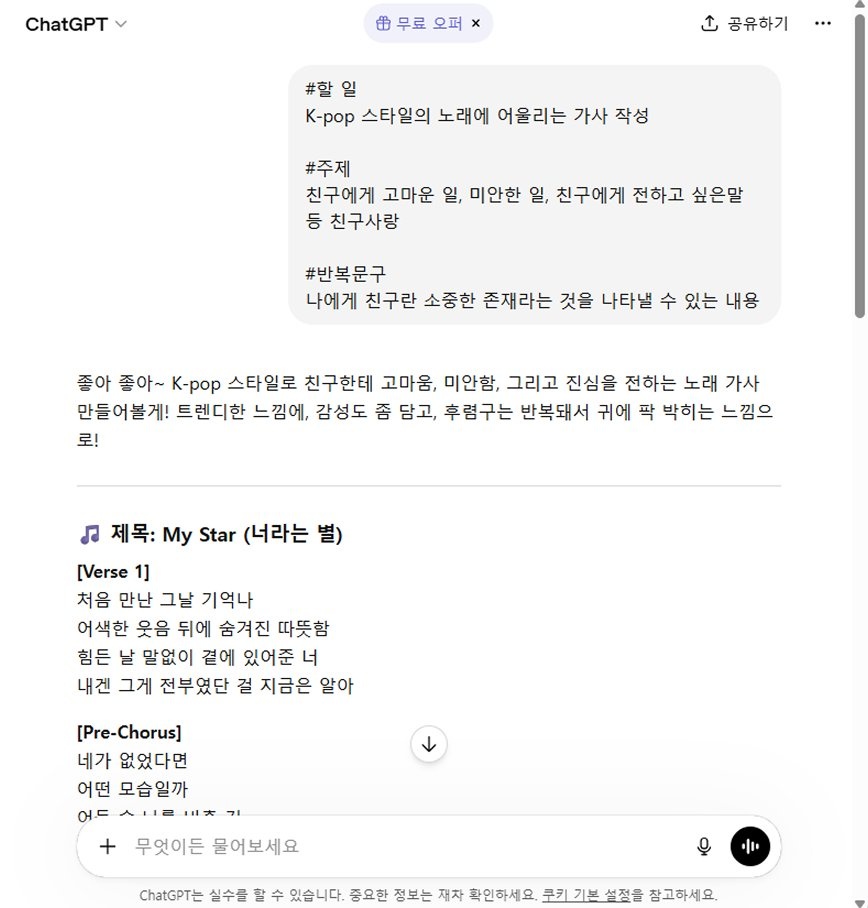

GENERATIVE AI FUNDAMENTALS FOR HARNESS-DRIVEN AGENTS
NLP
Natural Language Processing
자연어를 컴퓨터가 이해할 수 있는 언어로 변환하는 과정 — '토큰화(Tokenization)'
LLM
Large Language Model
토큰화된 정보를 바탕으로 맥락을 추론하고 응답을 생성
Tokenization
자연어를 컴퓨터 언어로 변환
각각의 토큰으로 쪼개는 방식과 토큰 간의 상관관계를 연산하는 방식의 차이로 다양한 모델이 등장.
Context Learning
맥락 추론 및 활용
언어모델이 토큰으로 변환된 자연어 정보의 누적을 통해 의미있는 맥락을 추론하고 활용함.
Input 자연어를 어떻게 구성하느냐에 따라 LLM의 추론 결과가 달라집니다. 수많은 형태의 프롬프트 작성법이 존재합니다.
생성형 AI가 아무리 발전해도 기본 원리는 LLM이기에, 다음 원칙은 익혀두면 어떤 모델에서도 통용됩니다.
언어모델과 대화할 수 있는 소통 화면. Gemini, ChatGPT, Claude의 웹/앱 화면이 모두 LLM Chat GUI입니다.


단순 대화에서 자율형 AI 조직까지, LLM 활용은 5단계로 나뉩니다.
LV.1
Chatbot
GUI를 통한 단순 대화 및 검색
LV.2
RAG
특정 데이터(문서, 이미지) 기반 답변 생성
LV.3
Harness
Plan, Action, Retrieve 과정의 자율형 워크프레임
LV.4
Agent
외부 도구(API 등) 연동 워크플로우 수행
LV.5
Organize
멀티 에이전트 협업의 자율형 AI 조직
Claude Desktop for Cowork
Lv.4 Agent ↔ Lv.5 Organize 사이에 위치한 고도화된 자율형 Agent를 배웁니다.
Harness Agent를 다루기 전에 알아두어야 할 핵심 개념 6가지를 차례로 살펴봅니다.
컴퓨터가 이해할 수 있는 텍스트로만 이루어진 설계도면. 브라우저가 HTML을 보고 웹페이지를 그려내듯, Markdown도 시각화를 위한 컴퓨터용 설계도면입니다.
컴퓨터가 보는 것
# 제목 ## 제목 ### 제목 **강조** - 글머리 > 인용
우리가 보는 것
강조
인용
특정 작업 수행을 위한 "업무 매뉴얼". 한 번 작성해두면 사용자가 매번 상세 프롬프트를 입력하지 않아도 동일한 결과를 얻을 수 있습니다.
Metaphor
"레시피"
어떤 아르바이트가 오더라도 "빅맥" 레시피는 동일하기 때문에, 사용자가 "빅맥"을 주문하면 동일한 "빅맥" 햄버거가 서빙됩니다. Skills도 마찬가지 — Markdown으로 작성한 업무 매뉴얼을 LLM에게 훈련시켜 두면, 동일한 요청에 동일한 품질의 결과를 보장합니다.
외부 프로그램을 사용하기 위한 "연결 통로". API를 통해 수많은 프로그램을 서로 연결할 수 있습니다.
Metaphor
"점원 & 키오스크"
사용자가 맥도날드에서 빅맥을 "주문"할 수 있는 통로 인터페이스 — 혹은 그 규격. LLM Chatbot에서는 사용자가 GUI 앱(Gemini, ChatGPT)을 통해 서버에 접근하지만, 내 컴퓨터에서 직접 LLM을 부르려면 API Key(Access Key, Auth Token 등)가 필요합니다.
하지만 API 구성 방식, 사용 정책, Key 사용 방식, 프로그램 호출 방식은 프로그램마다 모두 다릅니다 — 이 혼란을 한 방에 통일한 것이 바로 다음 개념입니다.
제각각인 API 활용 방식을 통합해주는 "단일 표준 규격". MCP 규격을 따르는 프로그램끼리는 연결이 매우 간단하고, 활용 방식이 규격화되어 오류가 적고 최적화도 잘 되어 있습니다.
Metaphor
"범용 어댑터" or "만능 통역기"
라이트닝 어댑터, USB-A, HDMI, RGB, AUX 등 여러 종류의 단자가 난무할 때 등장한 USB-C처럼, MCP는 LLM ↔ 외부 도구 연결의 USB-C입니다.
LLM이 일을 할 수 있도록 다양한 Skills, MCP 등 도구를 갖춰놓은 상태.
Metaphor
"대기업 본부 사무실"
똑똑한 직원이 업무를 수행할 수 있도록 책상, 컴퓨터, 필기구, 지류 등을 배치해두고 업무 매뉴얼을 정리해서 꽂아둔 업무 공간.
적절한 Harness를 갖춘 인공지능 모델
Harness 구조를 활용하여 주어진 목표를 달성하기 위해 작업 계획을 작성하고 적절한 도구를 호출하여 작업을 수행하는 과정.
Metaphor
"팀장" or "PM"
여러 직원 혹은 부서를 나누어 업무 계획을 수립하고 보고를 받으며 목표를 달성하기 위해 관리를 수행하는 과정.
Single Agent
Agent 혼자서 Orchestration을 진행
Multi Agent
HQ Agent(Main)가 전체 과정을 지휘하고 적절한 Sub-Agent들을 구성하여 일을 분배
Claude Desktop — 매우 높은 수준의 Harness를 갖춘 자율형 Agent.
Claude Cowork — Claude Desktop의 Skills · MCP 등 다양한 도구와 로컬 디렉토리에 접근할 수 있는 권한을 활용하여, 사용자의 입력을 분석하고 적절한 Orchestration을 스스로 수행하며 목표 달성을 위해 자율적으로 동작하는 고도화된 Agent.
Next session · 실습개념을 익혔다면 이제 직접 손으로 만들어 볼 차례. Claude Desktop을 자율형 에이전트로 셋업하는 실습 가이드로 이동합니다.
Agentic AI with LLM — 이 강의에서 배운 Skills · MCP · Harness · Orchestration 개념을 실제 워크플로우로 직접 구축해봅니다.